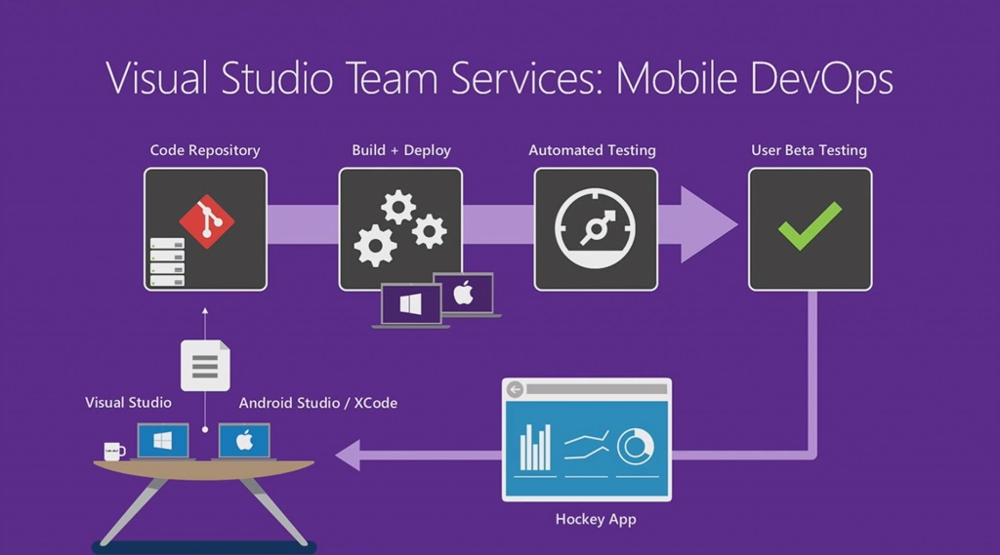

|
Visual Studio Team Services |
Antes de entrarmos no conceito abordado pela microsoft, temos que saber que um modelo de trabalho em equipe deve ter Agilidade,colaboração e Automação.
Com intuido de evitar o retrabalho, e pensando no ciclo de aplicação, a IBM lançou o conceito de ALM, que mais para frente foi integrado com a operação, dando inicio ao conceito de DEVOPS.
A Microsoft continuou evoluindo o conceito de DevOps, e transformou sua ferramenta TFS(team fundation server) no VSTS (Visual Studio Team Services) O VSTS é uma plataforma da microsoft, que tem como objetivo integrar as ferramentas da Microsoft para facilitar e agilizar o desenvolvimento, com compilações automaticas(Build), testes automatizados, entre outras funcionalidades.
Tendo um unico ambiente integrado, alem de manter a segurança, consegue ter um gerenciamento efetivo dos códigos fontes gerados, gerenciamento do projeto, gerenciamento de testes e de todo o ciclo de vida da aplicação. Ou seja, utilizando o conceito de DevOps, a Microsoft criou um ambiente integrado que pode ser utilizados por todos envolvidos no projeto, unificando a equipe de Projetos, de suporte, diretoria, etc.
Com todos utilizando o mesmo ambiente, otimiza o tempo de comunicação, sabendo em tempo real quem está com determinado desenvolvimento, quais atualizações foram feitas, e mantendo sempre os arquivos em nuvem, evita perda de dados importantes.
